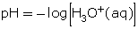
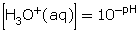
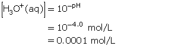
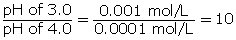
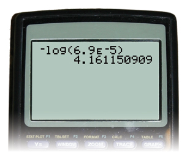

Module 5—Acids and Bases
 Explore
Explore
 Read
Read
The pH Scale
In previous science courses, you may have measured and commented on the pH of solutions, but did you really know what that measurement meant? You may recall the following criteria that are often used to classify acidic, basic, and neutral solutions:
If [H3O+(aq)] = [OH-(aq)], then the solution is neutral.
If [H3O+(aq)] > [OH-(aq)], then the solution is acidic.
If [H3O+(aq)] < [OH-(aq)], then the solution is basic.
To learn more about the pH scale and what the values on this scale mean in terms of hydronium-ion and hydroxide-ion concentrations, read pages 238 and 239 of “6.2 pH and pOH Calculations” in your textbook.
Use “Figure 3” on page 239 to answer “Practice” questions 1 to 3. Check your answers with those given at the back of the textbook.
Calculating pH
Read pages 240 to 242 in your textbook. Also read "Precision Rule for pH" and "Certainty" on page 814 in your textbook. Carefully work through the “SAMPLE problems” and “COMMUNICATION examples” presented, as well as the examples below.
A pH value is an expression of the hydronium-ion concentration for a solution. Since hydronium-ion concentrations are often small, the most convenient way to represent these values is as a negative logarithm. To convert a hydronium-ion concentration into a pH value, the following algorithm is used:

To convert a pH value back into a hydronium-ion concentration, the following algorithm is used:

Earlier, you were asked to express values using the appropriate number of significant digits. The number of digits following the decimal point of a pH value equals the number of significant digits in the hydronium-ion concentration.
Work through the next four examples. Examples 1 and 2 provide a multimedia activity that shows how to perform the calculations using a graphing calculator.
Example 1
A solution has a hydronium-ion concentration of 2.5 × 10−9 mol/L. Calculate the pH of this solution.
Since the hydronium-ion concentration is given, use the formula for pH.
Substitute the hydronium-ion concentration into the formula.

Click here to see how this calculation is performed on the TI-83 Plus graphing calculator.
Example 2
A solution has a pH of 3.5. Determine the hydronium-ion concentration.
Since the pH is given, use the algorithm 
Substitute the pH value into the algorithm.

Click here to see how this calculation is performed on the TI-83 Plus graphing calculator.

Example 3
Calculate the hydronium-ion concentration, [H3O+(aq)], for a solution with a pH of 0.00.

Example 4
Compare the hydronium-ion concentrations of a solution with a pH of 3.0 with that of a solution with a pH of 4.0.

Step 1: Calculate the hydronium-ion concentration in the solution with a pH of 3.0.

Step 2: Calculate the hydronium-ion concentration in a solution with a pH of 4.0.

Step 3: Determine how many times greater the hydronium-ion concentration is between the two solutions. Divide the greater concentration value by the lesser value.

The hydronium-ion concentration of a solution with a pH of 3.0 is ten times greater than the hydronium-ion concentration of a solution with a pH of 4.0.
 Self-Check
Self-Check
SC 1. Calculate the pH of a solution with a hydronium-ion concentration of 4.70 × 10−4 mol/L.
SC 2. Determine the hydronium-ion concentration for a solution with a pH of 0.13.
SC 3. Calculate the pH of a solution of hydrobromic acid that has a hydronium-ion concentration of 6.9 × 10−5 mol/L.
SC 4. Is it possible for a solution to have negative pH values or pH values over 14? Use calculations to justify your answer.
Self-Check Answers
SC 1.


SC 2.


SC 3.


SC 4. Yes. A solution with a negative pH value has a hydronium-ion concentration that is greater than 1.0 mol/L. A solution with a pH value over 14 has a hydronium-ion concentration that is less than 1.0 × 10−14 mol/L. Both concentrations are possible.